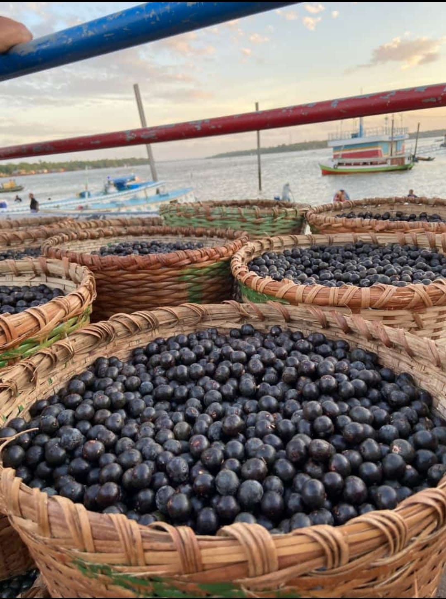
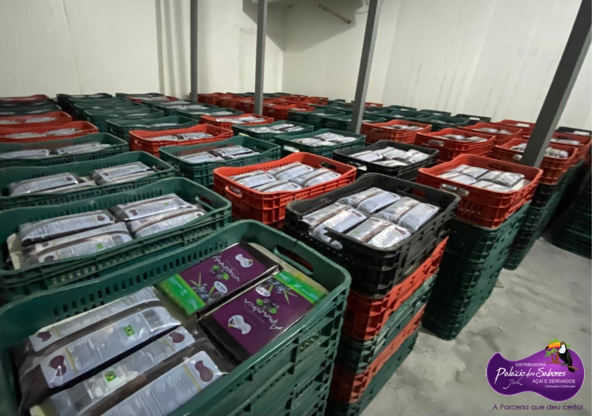
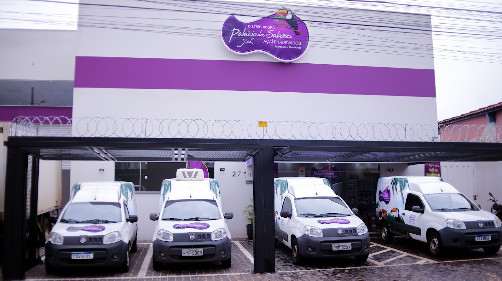

De onde Vem O Açai da J&L
Na Palácio dos Sabores, acreditamos que o segredo de um açaí inesquecível começa muito antes de chegar à tigela. Nossa história atravessa o Brasil, conectando a biodiversidade da Amazônia à tecnologia da nossa fábrica em Uberlândia
A Origem do Açaí
Tudo começa nas terras férteis do Pará, o maior e melhor produtor de açaí do mundo. Nossos frutos são colhidos de forma sustentável em palmeiras nativas. O processo é artesanal e respeita o tempo da natureza, garantindo que apenas os grãos mais maduros e nutritivos sejam selecionados.Assim que colhido, o fruto passa por um rigoroso processo de higienização e despolpamento. É aqui que o açaí se transforma naquela polpa vibrante e pura que preserva todas as propriedades antioxidantes. Essa polpa é congelada em barras de alta qualidade, embaladas com segurança para manter o frescor da floresta intacto.

A J&L Palácio dos Sabores
Para garantir que a qualidade não se perca no caminho, utilizamos uma logística impecável. As barras de açaí são transportadas em caminhões frigoríficos monitorados, cruzando o país até chegarem à nossa fábrica em Uberlândia, MG. Já em nossa fábrica, a mágica acontece. Unimos a tradição paraense com o paladar mineiro. Nossa receita utiliza apenas a polpa pura, sem adição de água ou conservantes, para entregar um açaí autêntico e cheio de sabor. Cada lote é testado para garantir que o padrão de qualidade seja mantido, desde a colheita até a entrega final.

Qualidade e Tradição
O resultado é um açaí cremoso, com textura perfeita e o equilíbrio ideal de sabores. Além de produzirmos o nosso açaí pronto para consumo, a Palácio dos Sabores também disponibiliza as barras de açaí puro para venda em nossa loja! Se você busca a matéria-prima original para suas próprias
